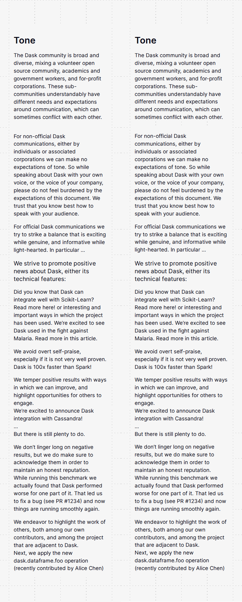
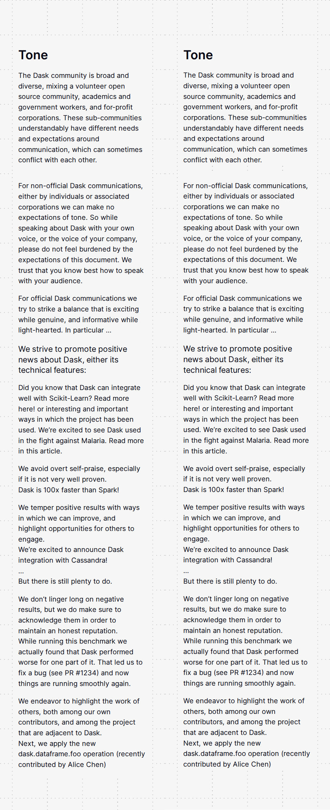
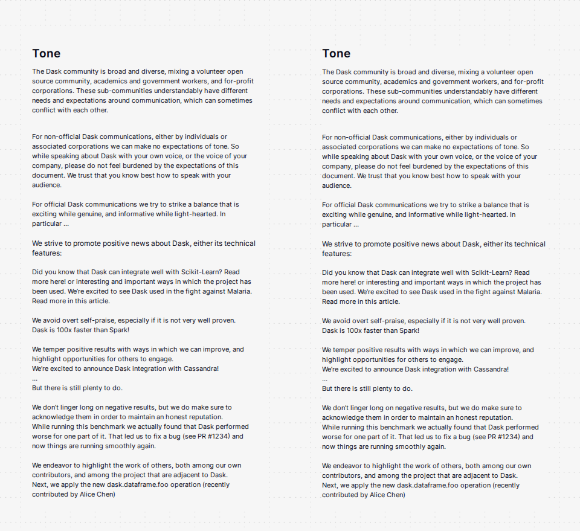
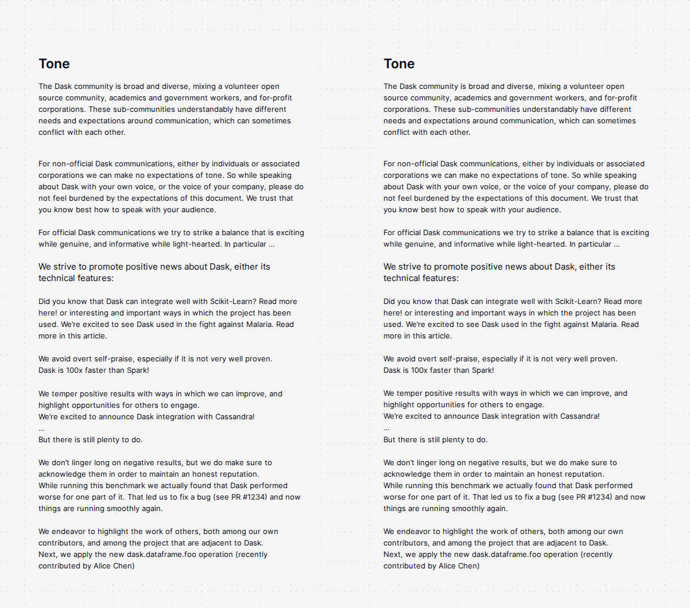
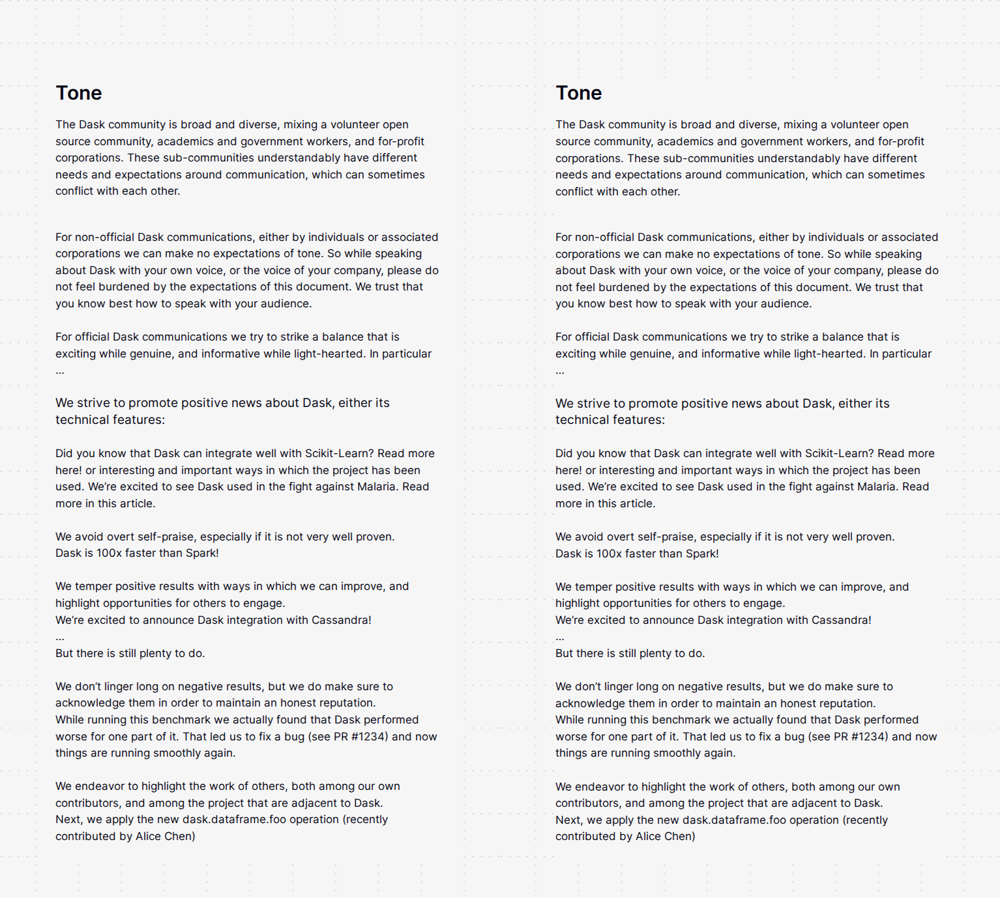
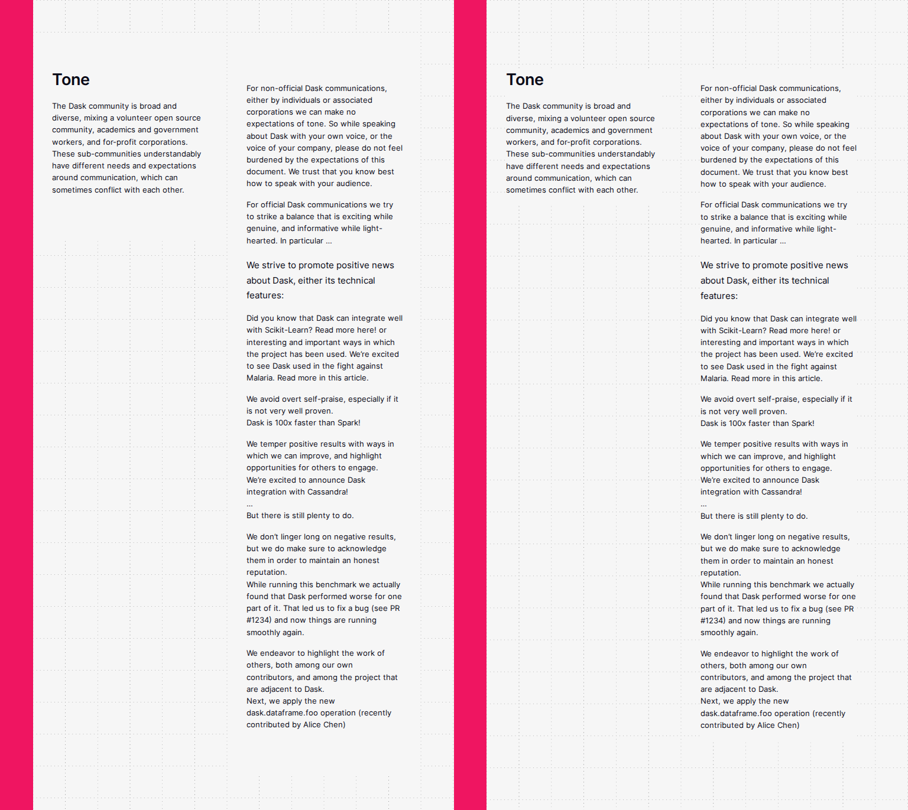
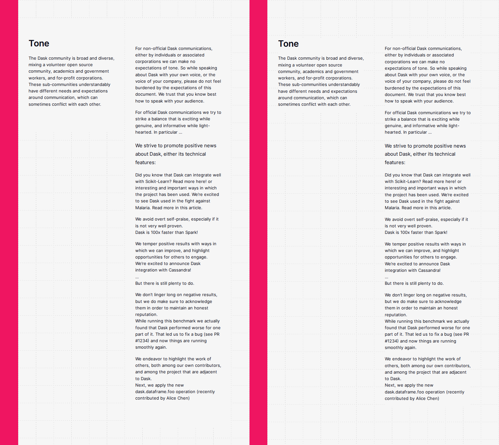
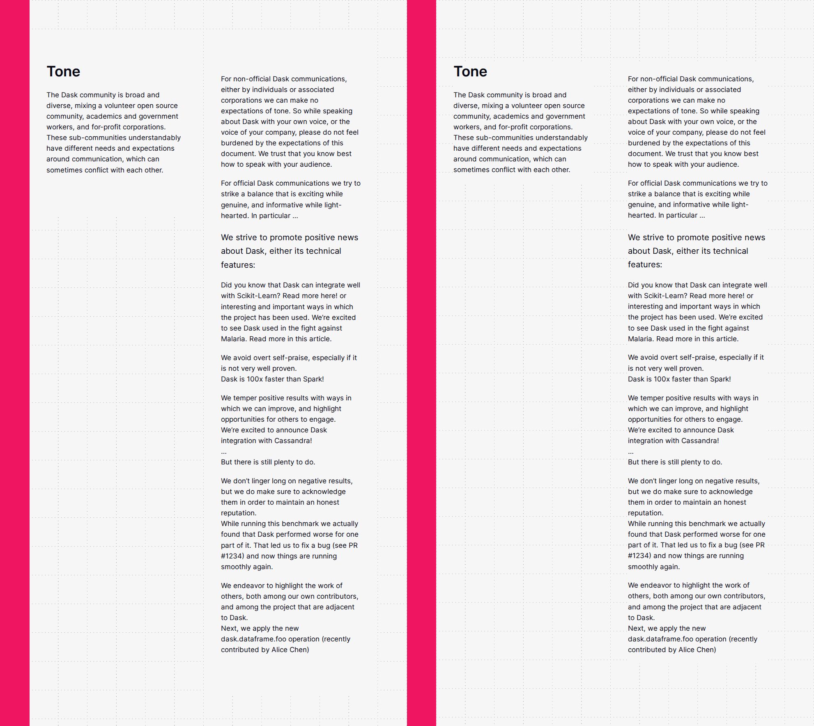
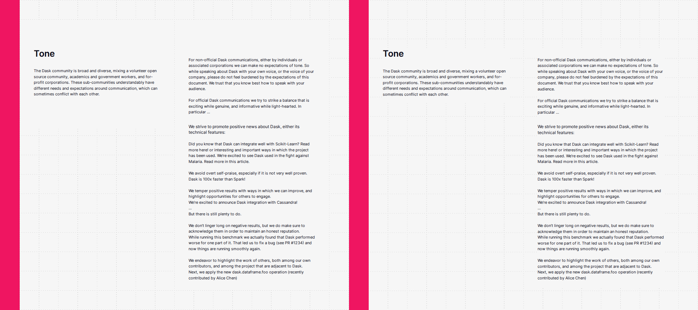
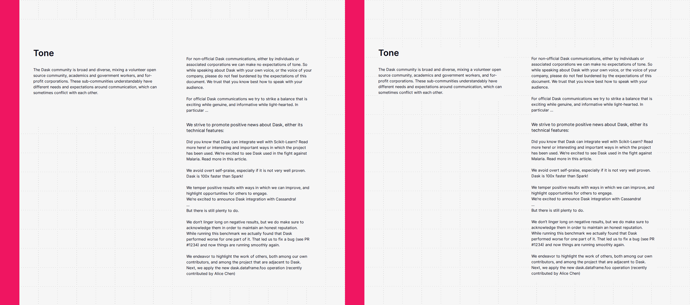

R6-1: Original left / native right
Viewport-wide crops at each section's start. Measured x is viewport-relative; y is section-relative. Nine paragraphs and both text-content columns are compared, not merely section height.
390px — largest paragraph error 0.21875px; column error 0px; differing pixels 0.856%

479px — largest paragraph error 0.21875px; column error 0px; differing pixels 3.011%

480px — largest paragraph error 0.0625px; column error 0.0625px; differing pixels 6.741%

601px — largest paragraph error 0.015625px; column error 0.015625px; differing pixels 0.461%

767px — largest paragraph error 0.015625px; column error 0.015625px; differing pixels 1.366%

768px — largest paragraph error 0.015625px; column error 0.015625px; differing pixels 1.980%

769px — largest paragraph error 0.015625px; column error 0.015625px; differing pixels 2.031%

991px — largest paragraph error 0.03125px; column error 0.03125px; differing pixels 0.928%

992px — largest paragraph error 0px; column error 0px; differing pixels 1.247%

1440px — largest paragraph error 0px; column error 0px; differing pixels 2.322%

Pixelmatch threshold0.1, antialias excluded, shorter crop padded white. Pixel difference is not a fidelity score; paint layers, sticky rail and rasterization contribute independently of text geometry.